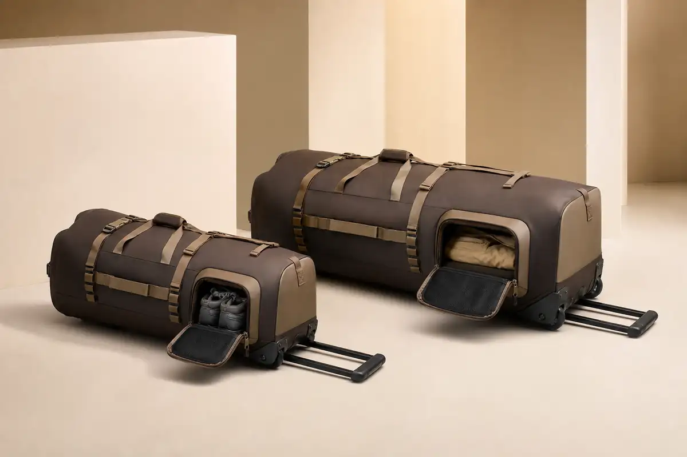

Reinforced Wheel System
Protected wheel housings, base guards and axle placement are evaluated around the intended load and travel environment.
Mobile Gear Development
Original OEM/ODM platform for hospitality, sports teams, diving programs and outdoor travel buyers that need rugged wheels, a pull handle and separated wet or dirty gear storage.

40L / 90L Platform
The compact and large-capacity directions share a visual family while wheel housings, frame support, handles and reinforcement are developed for each size.
Protected wheel housings, base guards and axle placement are evaluated around the intended load and travel environment.
Telescopic handle length, grip, frame support and service access are confirmed through sampling.
A separate-access compartment can isolate footwear, dive accessories or used team gear from the main load.
Applications
Branded guest activity gear, staff transport or resort excursion programs.
Club and team equipment movement with color, number-label and logo options.
Structured storage directions for wet accessories, fins and travel equipment.
Large-capacity rolling gear for expeditions, camps and specialist tour operators.
OEM/ODM & MOQ
MOQ and pricing depend on capacity, coated material, wheel and trolley components, frame, reinforcement, logo and packaging. No waterproof claim is confirmed until the construction and required testing are agreed.
Quality Control
Fabric, wheels, trolley parts, base guards, hardware and approved colors are checked.
Handle mounts, wheel housings, base reinforcement and webbing anchors receive focused review.
Wheels, pull handle, openings, zippers and separated compartments are operated during inspection.
Branding, labels, protective packing, carton quantity and carton marks follow the approval sheet.
FAQ
MOQ varies with coated material, wheel and trolley system, size, logo and packaging. We confirm it from a detailed brief.
Yes. Each version receives a size-specific wheel, frame, handle and reinforcement review.
Yes. Location, access, lining and ventilation direction can be adjusted for the intended use.
The target use can inform development, but final size, weight and travel compliance must be checked against the buyer's carrier and market requirements.
Send capacity, load target, application, quantity, material direction and branding brief.